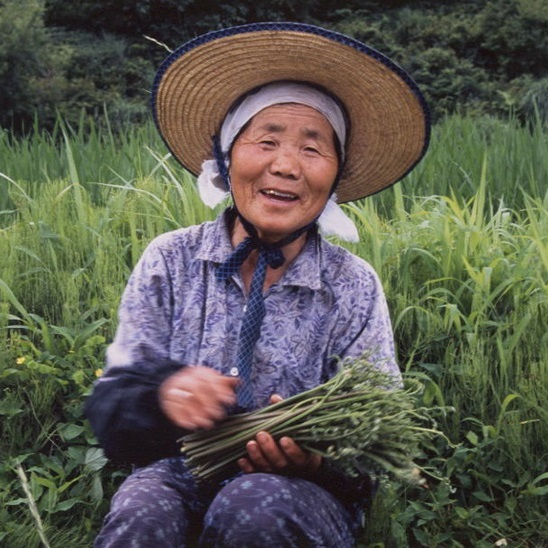
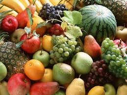

首頁
農產品
五穀雜糧
蔬菜
畜產/水產
水果
手製品
農友列表
北部
中部
南部
東部
外島
農友登記
關於我們
部落格
最新消息
本月主打星
消費心得
心路歷程
農家食譜
熱門文章

NO.1
快樂農場
吳春梅
NO.2
快樂農場
吳春梅
NO.3
快樂農場
吳春梅
NO.4
快樂農場
吳春梅
NO.5
快樂農場
吳春梅
友善環境，無菌栽培
最新消息 2014/5/10 PM7:24

雖然農業總是遇到許多困境與挑戰，但每次遇到熱血的青年農夫，就覺得台灣的未來充滿希望!
繼續閱讀
友善環境，無菌栽培
最新消息 2014/5/10 PM7:24
雖然農業總是遇到許多困境與挑戰，但每次遇到熱血的青年農夫，就覺得台灣的未來充滿希望!
繼續閱讀
友善環境，無菌栽培
最新消息 2014/5/10 PM7:24
雖然農業總是遇到許多困境與挑戰，但每次遇到熱血的青年農夫，就覺得台灣的未來充滿希望!
繼續閱讀